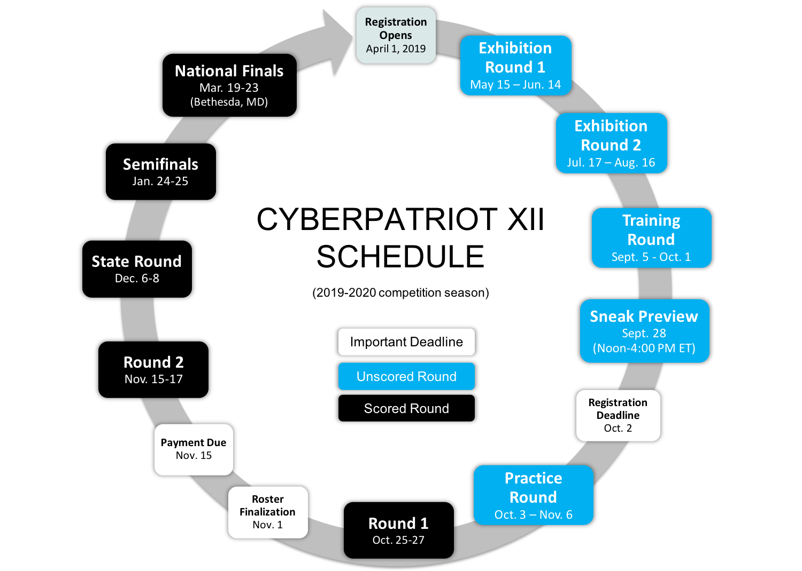

independent-project.html
CYBER SECURITY - YEAR 2 ASSIGNMENTS--- CYBER PATRIOT (ex·hi·bi·tion) ___ Exhibition Round (Upload screenshots to google drive) ___ Practice Round (Upload screenshots to google drive) ___ Preactice Round - CISCO Packet Tracer - Group Meeting Take the CISCO QUIZ and prepare to discuss questions with class. Upload CISCO image and discuss with class the specs of the network. --- PACKETTRACER ___ Create the VLAN show in the following video. http://tritechsc.ksd.org/cyber/documentation/cisco/video/ ___ Create a network that connects 3 different networks. 172.x.x.x / x , 192.x.x.x / x and 10.x.x.x / x Prove they all connect. --- HARDWARE ___ Design a custom server used for virtual machines (minimal graphics). List parts and present to class (2 minutes). Post on username.github.io 32GB of RAM. Describe why you chose the motherboard you picked. 